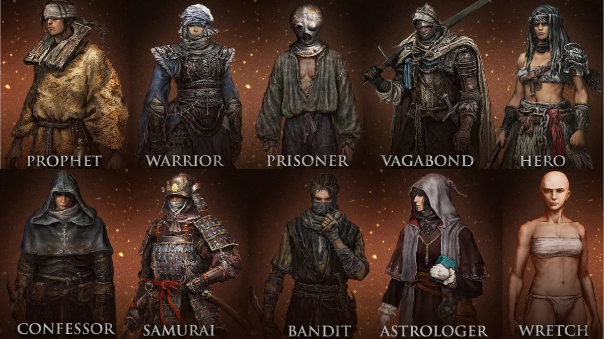

Introducción
Al iniciar el juego, puedes elegir entre diez clases diferentes, cada una con atributos y equipos únicos. Tu elección influye en el estilo de combate, pero no limita tu desarrollo futuro.
Escoge tu destino
- Vagante: Guerrero balanceado con buena defensa y fuerza física.
- Héroe: Maestro del combate cuerpo a cuerpo con hacha.
- Astrólogo: Especialista en magia de hechicería, ideal a distancia.
- Profeta: Usan encantamientos, fe elevada.
- Samurái: Equilibrio entre combate cuerpo a cuerpo y a distancia.
- Miserable: Comienza en nivel 1 con estadísticas balanceadas y sin equipo.
Otras clases disponibles incluyen el Ladrón, el Prisionero (ideal para magia e inteligencia) y el Confesor, experto en fe y sigilo.
Personalización de personajes
Además de elegir una clase, puedes personalizar el aspecto, atributos iniciales y dones especiales como la Semilla Dorada o la Medusa Espiritual. Esto influye en tu estilo de juego desde el principio.
Estadísticas clave
Cada clase comienza con estadísticas únicas que influyen en salud (Vigor), fuerza, destreza, inteligencia (para magia) y fe (para encantamientos). Aunque todas pueden evolucionar libremente, tu elección inicial determina la dificultad temprana.
Dones iniciales
Puedes seleccionar un "regalo" como item inicial, desde bombas explosivas, medallones curativos hasta la "Llave de Piedra Imbuida", útil para acceder a zonas secretas desde el principio.